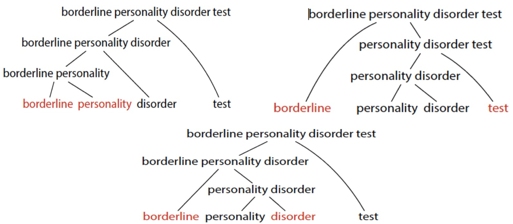
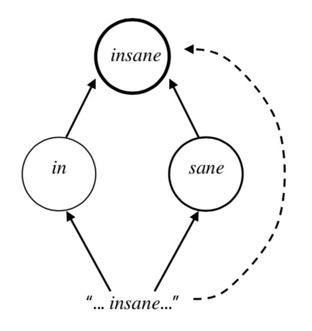
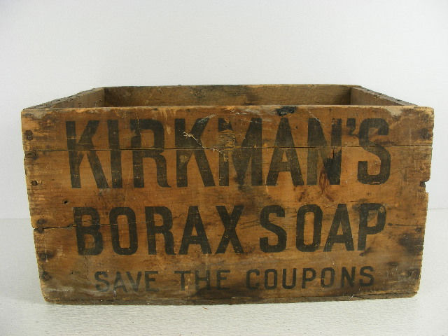
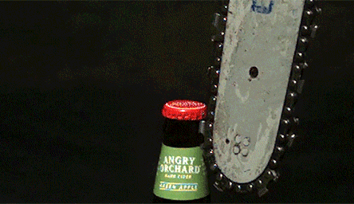

<video controls src="video/ppap.mp4"> --- # Clitics, Compounds, and other weird chunks of meaning ### Dr. Will Styler - LIGN 120 --- ### We've talked about the idea of richer storage - "Maybe we're storing bigger, analyzable chunks" - And we've now talked about frequency having important effects - Frequency makes weirdness permissible - Today, let's talk about some other strange chunks --- ### Today's Plan - Clitics - Compounds - Closing the Lexical Discussion --- # Some Clitical Thinking --- ### We've discussed 'word' being a slippery concept - There's no clear definition that works well for everything - Some multi-word chunks feel 'cohesive' - copy machine, phone charger, over-the-top - Some affixes feel 'wordy' --- ## Clitics Affixes that show word-like independence --- ### The 's Possessive Clitic - girl - the girl's book - the little girl's book - the little girl from Canada's book - **This affix can attach to a variety of words with the same meaning!** - It can even attach to different syntactic categories! --- ### The 's copular clitic - John's doing great in the class. - Fixing the scooter you broke's gonna be expensive - That car in red's super hard to find. - **This has the same distribution as 'is', but acts like an affix.** --- ### The 've modal clitic - I would've youghten him out of there had I known - All the ones I've seen've been blue. - The purple've sold out already. - You already've seen it? --- ### They don't feel like affixes - They don't have **selectional restrictions**, and can attach to most things - Compare '\*the car you wreckeds are expensive' - They have **freedom of host**, and can attach to many lexical categories - They appear to attach **after stress has been assigned** - Dígamelo! should be 'digaMElo' according to Spanish rules --- ### Clitics are strange - ... and your book goes into more detail about how in Chapter 9 - But they're an example of something that doesn't quite 'fit' in a world of affixes and stems - If we conceptualize morphology as only having two states, 'attached affix' and 'stem', we're gonna have a rough time. --- ### Clitics are attached chunks that feel like they're independent - ... and force us to consider a morphology which allows gradient attachment - What about the opposite? - **Let's think about independent chunks, that feel attached!** --- # Compounds --- ### Sometimes, separate words feel more connected than the space makes them seem - 'Backpack' is not 'back' and 'pack' - Front pack and back pack - 'Laptop' is not 'lap' and 'top' - 'I put my laptop on a desk, so it's a desktop computer' --- ## Compounds Compounds are single complex lexemes composed of two or more lexemes - Compounds can be two *or more* words. 'Blue cheese salad dressing' - Don't get too hung up on spaces, dashes, and lacks thereof! --- ### Example Compounds - Chinese: zhèn zhi̊ (press-down + paper) = paperweight - Swedish: piphuvud (pipe + head) = pipe bowl - Czech: lido-jed (human + eat) = cannibal - Koasati: ʧonhǎtka (oʧona ‘metal’ + hatka- ‘white’) = bucket - Tłı̨chǫ Yatıì (Dogrib): dlòotsǫ̀ǫ̀ (dlòo 'squirrel' + tsǫ̀ǫ̀ 'dung’) = 'peanut butter’ --- ### Compounds form from high frequency use - 'wrist watch' was an innovation, until it wasn't - 'Lap top computer' wasn't always a 'laptop' - 'data set' isn't a compound to most people, but it is to us! - 'nail bed' is a thing to people who do fingernails professionally --- ### Compounds act like words! - They have idiosyncratic or restricted meanings - They have phonological and prosodic cohesion - They act like stems --- ### Idiosyncratic and Restricted Meanings - Not all packs on the back are backpacks - rainfall, snowfall, \*hailfall, \*sleetfall - You can dog walk somebody who isn't a dog - A tower computer placed on the lap is not a laptop computer - They can feel **idiomatic** - Their meaning isn't interpretable from their parts (e.g. 'kick the bucket') --- ### The meanings of compounds can be variably persistent by analogy - Butt Dial - Butt text? Butt telegram? Butt email? - Booty call - Booty text? Booty telegram? Booty email? - Break a leg - Break both legs? Break everything? - Big Mac - Little Mac? Mega Mac? --- ### Compounds have phonological and prosodic cohesion - She gave me a Krispy Kreme Donut - I had Five Guys for dinner last night - Compounds can have specific tone patterns - Phonological rules can apply differently within compounds --- ### Brown Coat --- ### Compounds act like stems - Affixes may not apply within them - What's the plural of... - Lightsaber - Light year - Big Mac - Queen of England - Hunter-Gatherer - Cheese Platter - Toothbrush - Mousetrap --- ## Compounds have different semantic types --- ### Compound Types - **Endocentric**: referent a 'kind' of one of its members - lipstick, swordfish, tower crane, textbook, cellphone, pocketknife - **Exocentric**: referent is 'outside' of the members' meanings - pickpocket, laptop, blowhard, pushover - **Coordinative**: referent is a combination of the members' meanings - Southwest, blue-green, dumpster fire, upper-right, freeze-dry - **Appositional**: both members have the same referent - God-Emperor, Singer-Songwriter, Owner/Operator, Washer/Dryer --- <section data-background-color=#708cef></section> ### Which type of compound is 'meathead'? A) **Endocentric**: referent a 'kind' of one of its members B) **Exocentric**: referent is 'outside' of the members' meanings C) **Coordinative**: referent is a combination of the members' meanings D) **Appositional**: both members have the same referent --- <section data-background-color=#708cef></section> ### Which type of compound is 'sleepwalk'? A) **Endocentric**: referent a 'kind' of one of its members B) **Exocentric**: referent is 'outside' of the members' meanings C) **Coordinative**: referent is a combination of the members' meanings D) **Appositional**: both members have the same referent --- <section data-background-color=#708cef></section> ### Which type of compound is 'trashcan'? A) **Endocentric**: referent a 'kind' of one of its members B) **Exocentric**: referent is 'outside' of the members' meanings C) **Coordinative**: referent is a combination of the members' meanings D) **Appositional**: both members have the same referent --- <section data-background-color=#708cef></section> ### Which type of compound is 'pass-fail'? A) **Endocentric**: referent a 'kind' of one of its members B) **Exocentric**: referent is 'outside' of the members' meanings C) **Coordinative**: referent is a combination of the members' meanings D) **Appositional**: both members have the same referent --- <section data-background-color=#708cef></section> ### Which type of compound is 'bittersweet'? A) **Endocentric**: referent a 'kind' of one of its members B) **Exocentric**: referent is 'outside' of the members' meanings C) **Coordinative**: referent is a combination of the members' meanings D) **Appositional**: both members have the same referent --- ## Compounds have internal structure --- ### Endocentric Compounds have 'Heads' - The head determines the lexical category - 'Light rail', 'overdo', 'dog walk', 'catsuit' - The head carries the inflection for the compound - 'whitewashed', 'sidestepping', 'undertaker', 'cheese platters' - The other element modifies or specifies the meaning of the head, it's the 'dependent' - 'What kind of stepping? Side stepping!' - Endocentric compounds refer to a subtype of the head. - 'textbooks', 'grad school', 'cat show' - If there's no head, the compound is exocentric! --- ### Head positioning is language specific - English places the head on the right: Light years - Spanish places the head on the left: año luz ('light year') -> 'años luz' ('light years') - So does Tagalog: matang-lawin, eyes-hawk, ‘hawkeyes’ --- ## Compounds can be ambiguous --- ### What's the head? - I saw a French Literature Professor - He's got a Justin Bieber Face Tattoo - Borderline Personality Disorder Tests --- ### We can think about this in terms of trees!  --- ### Compounds are when multiple words end up stored like one word - With specific meanings, phonological wordiness, and word-like inflection - Unlike clitics, which are affixes that act wordy on occasion! - ... which brings us back to that lexicon bit --- # Final Words on the Lexicon - Get it? Words? :D --- ### We've talked about two possibilities! - **Morpheme-based Lexicon**: Storage is expensive, so let's store the smallest parts and use rules to combine them - **Word-based Lexicon**: Storage is cheap, store EVERYTHING and then use analogy to fill in the blanks --- ### Both have advantages and disadvantages --- ### Pros of a Morpheme-based Lexicon - Uniting forms with rules can be very **elegant** - The lexicon is **compact** and **efficient**. Little storage space is required - Rules can efficiently generate a *lot* of the variants we see - Our analysis (forms+rules) **generates** legal forms, which leaves us ready for productivity! - Phonemes and Morphemes sure *feel* real! --- ### Cons of a Morpheme-based Lexicon - The elegance and efficiency is reduced as irregularity increases - Non-compositional meanings aren't efficient - Non-concatenative morphology is hard - **Frequency effects are harder to account for** --- ### Pros of a Whole-Word Lexicon - Storage appears to be pretty cheap - Emergence is pretty compelling for explaining learning and language change - Reanalysis works **great** - Phonetic phenomena work **great** in a usage-based world - Phonology goes away! - Frequency effects come free with the model! --- ### Cons of a Whole-Word Lexicon - Your students glare at you when you explain it - Morphemes sure feel real in phonological and morphological rules - Polysynthetic languages result in a combinatorial explosion - 'Analogy' is magic, and ends up looking like generative rules when formalized - It takes **forever** to accomplish anything - ... and it's just not workable for linguistic fieldwork --- ### Is there a middle ground? --- # Yes! --- ## The Dual-route Lexicon --- ### Life in a Dual-Route Lexicon - We're storing lots of words, including some frequent 'complex' chunks - Compounds and Common Morphologically Complex forms - We also have the ability to decompose words according to rules - Affixes, Phonology, and Morphological rules are not opaque to us - We choose the method of access that makes most sense at the time! --- ### The Dual-Route Lexicon Schematized  --- ### Put differently... - "Store as chunks the things that make sense to store as chunks, but remember that there are patterns and abstractions!" --- ### Pros of the Dual-Route Approach - Best of both worlds - Frequency effects and whole-word-like phenomena are explained - Analogy is done better than 'Magic!' --- ### Cons of the Dual-Route Approach - We lose the simplicity of both sides - Hello again, Phonemes and Phonology - Now we have two systems awkwardly taped together - ... and we have to describe where they switch off --- # Will's Hot Take - Compound! ---  --- ### Whole-Word, Morpheme-based, and Dual-Route Approaches are all plausible - None of them make predictions that are provably false - They seem cognitively possible - They account for relevant amounts of data - They've all stood up to scrutiny in the community - **We don't know which of these approaches is 'more real'** --- ### Linguistics is about analysis - "How do I best explain what's going on in this chunk of language?" - Theories are tools which help us - Every theoretical tool has strengths and weaknesses - Some problems are *stupid easy* with one theory, and *ridiculously hard* for another --- ### You can analyze a given phenomenon with any of these theories - You can make morpheme-based approaches deal with high-frequency phonological reduction - You can make usage-based approaches deal with wugs and morpheme-driven processes - You can make a dual-route approach account for all the data, and specify the switching pattern --- ### You can also open a beer with a chainsaw -  - # <danger>... but that does not mean you should</danger> --- ### Choose the right tool for the job - Look at the problem you have in the data - Choose the approach that's best suited to address it - ... and get the analysis done --- ### Maybe we'll figure out the cognitive reality of all of this some day - ... but for now, I'm just going to use what works - # ¯\\\_(ツ)\_/¯ --- <huge>\</ \></huge> --- ### For Next Time - **No Class on Monday!** - Wednesday, we'll look at some amazing data! --- <huge>Thank you!</huge>